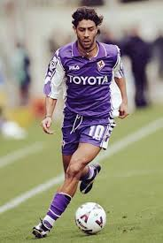

Welcome to Forza Viola!
Fiorentina
ACF Fiorentina is a professional football club based in Florence, Italy. Known for its distinctive purple kits, the club has a rich history and a passionate fan base. Fiorentina plays its home matches at the Stadio Artemio Franchi, a historic stadium that has been the site of many memorable moments in Italian football.
The team has enjoyed various successes, including winning the Serie A title twice, along with multiple Coppa Italia trophies and the UEFA Cup Winners' Cup in 1961. Fiorentina is also recognized for its youth academy, which has produced notable players who have made significant contributions to Italian and international football. The club's identity is deeply intertwined with the culture and heritage of Florence, making it a symbol of pride for the local community.
Fiorentina's supporters are known as "Viola". The club continues to strive for excellence in both domestic and European competitions, aiming to reclaim its position among Italy's top football clubs.
History
ACF Fiorentina, commonly known as Fiorentina, was founded in 1926 in Florence, Italy, through the merger of two clubs, Libertas and Club Sportivo Firenze. The primary aim was to create a competitive team that could rival the dominant Northern Italian clubs. The club quickly gained prominence, adopting the iconic purple kits, which earned them the nickname "La Viola.
Fiorentina's early success came in the 1950s when the team won its first Serie A title during the 1955-56 season. Coached by Fulvio Bernardini, Fiorentina dominated the league and established itself as a force in Italian football. They continued to perform well throughout the 1960s, claiming their second Scudetto in the 1968-69 season. This period also saw the club winning the Coppa Italia multiple times, further enhancing their status.
In European competitions, Fiorentina has left its mark as well. The club reached the finals of the European Cup (now the UEFA Champions League) in 1957, narrowly losing to Real Madrid. Fiorentina was also the first Italian club to win a major European trophy, lifting the UEFA Cup Winners' Cup in 1961. Throughout the 1970s and 1980s, Fiorentina experienced mixed fortunes, often challenging for top positions but not managing to secure another league title. In the 1990s, star players like Gabriel Batistuta helped rejuvenate the club, leading to success in the Coppa Italia and UEFA competitions.
Fiorentina faced financial troubles in the early 2000s, culminating in bankruptcy in 2002. However, the club was re-founded and re-entered Serie A within a few seasons, continuing to be a competitive force. Today, Fiorentina remains a proud club with a rich history, beloved by fans for its attacking style of football and passionate support.
In recent years, Fiorentina has undergone significant changes both on and off the field. Following their financial struggles in the early 2000s, the club was purchased by the Della Valle family, who helped stabilize Fiorentina and guide them back to Serie A in 2004. The team steadily regained its competitive edge, often competing for European spots in Serie A. Under the management of Cesare Prandelli and later Vincenzo Montella, Fiorentina reached the UEFA Champions League in 2008-09 and made deep runs in the Europa League.
In 2019, American businessman Rocco Commisso took over ownership of the club, marking a new chapter in Fiorentina’s history. Commisso has invested in improving the club’s facilities and has ambitious plans to build a new stadium to further elevate the team’s status. On the pitch, Fiorentina continues to develop talented young players while balancing experienced stars in their pursuit of returning to the top echelons of Italian football.
While Fiorentina has yet to add another league title to its collection in recent decades, the club remains a symbol of pride for Florence, with a loyal fan base that passionately supports “La Viola” through ups and downs. The team's rich history, iconic purple jerseys, and commitment to playing attractive football ensure that Fiorentina will remain a beloved institution in Italian and European football for years to come.
Legends
Gabriel Batistuta
Roberto Baggio
Rui Costa
